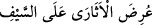
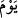
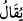
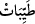

“İnkâr edenler ateşe sunulacakları” orada azab edilecekleri “gün”, sitem ve azar
olarak “(kendilerine denir ki): “Dünyâ hayâtınızda bütün güzel şeylerinizi”, dünya
haz ve lezzetlerinden size takdim edilen şeyleri alıp elde ederek “zâyî ettiniz; (orada)
bunlarla safâ sürüp bunları tükettiniz (burası için hiçbir şey bırakmadınız).
Yeryüzünde haksız yere büyüklük taslamanızdan” -ki bu büyüklük taslama haklı olarak
zâlimlere karşı olsa yadırganmaz- “ve” devam eden kibir ve fıskınız sebebiyle
“yoldan”, Allah’a tâatten “çıkmanızdan ötürü bugün” sizi hor ve hakir edecek
“alçaltıcı bir azâb ile cezâlandırılacaksınız.”
“İnkâr edenler ateşe sunulacakları gün.” Burada “arz” kelimesi mecâzen azap etmek
mânâsına hamledilmiştir. Bu söz arapların
“__WORD__ esirler kılıca arz edildi sözünden alınmış olup “öldürüldüler”
demektir. Yoksa kendisine arz olunan şuûr ve idrak ehlinden olmalıdır. Ateş ise buna
ehil değildir. Şöyle de denilir: Bunlar ateşin karşısında durdurulup ateşi ve oradaki
yerleri görecekleri şekilde ateş kendilerine arz edilecektir. Tabiî ki bu durum onlar
ateşe atılmadan önce olacaktır. Bu durumda onların ateşe arz edilmeleri mübalağa için
kalb; yâni hükmün ters çevrilmesi babından olup sanki burada ateşin kahr ve üstünlük
sahibi, mümeyyiz; yâni akıl ve idrak sahibi olduğu iddiâ edilmektedir.
Fakîr (Bursevî) der ki: Bana göre bu âyetin îzâhında bu iki tevile yani arzın azab
edilmek olarak yahut ateşin onlara gösterilmesi olarak yorumlanmasına hacet yoktur.
Zira âhiret ateşi şuur ve idrak sâhibidir. Allah Teâlâ şöyle buyuruyor: “O gün
cehenneme: “Doldun mu? deriz .O da“Daha yok mu?” der.” (Kaf, 50/30).
Yine cehennem üzerine kurulu olan sırat köprüsünden geçme anında ateş konuşup: “Ey
mümin çabuk geç, zira senin nurun benim nârımı söndürecek” diyecektir. Daha buna
benzer durumlar olacaktır. Ayrıca cehennemliklerin azap melekleri itibariyle ateşe arz
edilmeleri hiç de uzak değildir. Çünkü melekler azap ve işkence âleti ile ateşin yanında
olacaklar, cehennem ehli de cehennem ehline azap ettikleri şeyleri alenî olarak, ayan
beyân göreceklerdir. En doğrusunu Allah bilir.
“(Kendilerine denir ki): “Dünyâ hayâtınızda bütün güzel şeylerinizi zâyî ettiniz.”
Burada “__WORD__” kelimesini nasb eden gizli bir “__WORD__ fiili vardır. “Dünyâ hayâtınızda”,
kendi dünyanızda, hayatta olduğunuzda lezîz olan şeyleri kendinize aldınız ve yediniz.
Bu lezzetlerden istifâde ettiniz; yâni bütün lezzetleri bu dünyada elde ettiniz de âhirete
hiçbir şey saklamadınız.
Burada “__WORD__ kelimesinin muzâf oluşu umumîlik ifâde eder. Müftî Sa’dî, “burada
safâ sürüp bunları tükettiniz” sözü, “güzel şeylerinizi zâyi ettiniz” sözünün atf-ı tefsiri
gibidir der. Allah Teâlâ kâfirlerin mâruz kaldıkları bu azabı iki önemli sebebe
bağlamıştır. Bunlardan birincisi hak dini ve Muhammed (s.a.)’e îmânı kabul etmeyerek
büyüklük taslamalarıdır ki bu kalbin günahıdır. İkincisi ise emirleri terk etmek ve
yasakları yapmak suretiyle isyan edip yoldan çıkmaktır ki bu da âzâların günahıdır.
Kalbin günahı âzâların günahından daha etkili olduğu için bu günahlardan birincisi